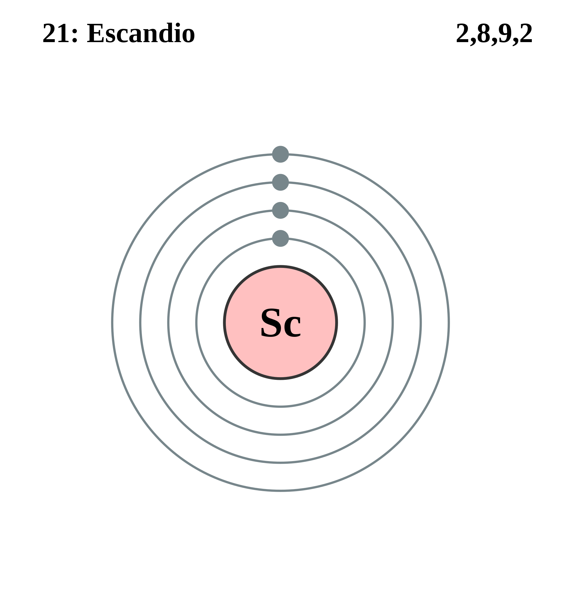

|
|
||
|
ESCANDIO El escandio se descubrió en 1878 en los minerales euxenita y gadolinita. Se encuentran cantidades diminutas de escandio en más de 800 minerales y es mucho más abundante en el Sol y ciertas estrellas que en la Tierra. El escandio es un metal alcalinotérreo que forma un color amarillo o rosa cuando se expone al aire. Es relativamente blando y ligero, reacciona con el agua y su llama es de un color rojo amarillento. |
 |
DATOS Número Atómico: 21 Peso Atómico: 44.96 Electronegatividad: 1.36 Configuración Electrónica: [Ar] 3d¹ 4s² Estados de Oxidación: +2 No. de Electrones de Valencia: 2 |